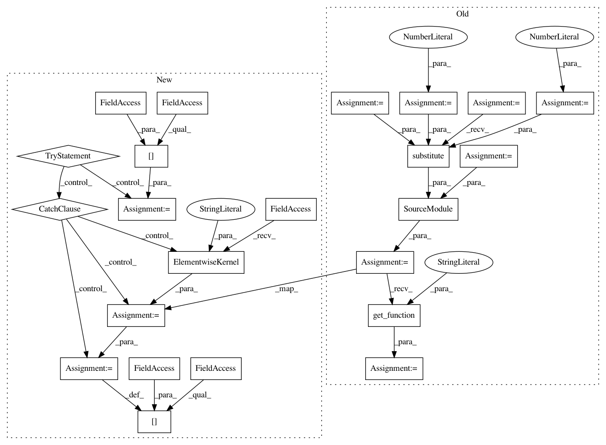

5dc3e70446c09312e2bd6dbe263b9af6f8405e62,scikits/cuda/special.py,,expi,#,208
Before Change
if z_gpu.dtype == np.complex64:
use_double = 0
elif z_gpu.dtype == np.complex128:
use_double = 1
else:
raise ValueError("unsupported type")
// Get block/grid sizes; the number of threads per block is limited
// to 128 because the kernel defined above uses too many
// registers to be invoked more threads per block:
dev = misc.get_current_device()
max_threads_per_block = 128
block_dim, grid_dim = \
misc.select_block_grid_sizes(dev, z_gpu.shape, max_threads_per_block)
// Set this to False when debugging to make sure the compiled kernel is
// not cached:
cache_dir=None
expi_mod = \
SourceModule(expi_template.substitute(use_double=use_double),
cache_dir=cache_dir,
options=["-I", install_headers])
expi_func = expi_mod.get_function("expi_array")
e_gpu = gpuarray.empty_like(z_gpu)
expi_func(z_gpu, e_gpu,
np.uint32(z_gpu.size),
After Change
raise ValueError("unsupported type")
op = "e[i] = expi(z[i])"
try:
func = expi.cache[z_gpu.dtype]
except KeyError:
func = elementwise.ElementwiseKernel(args, op,
options=["-I", install_headers],
preamble="//include "cuSpecialFuncs.h"")
expi.cache[z_gpu.dtype] = func
e_gpu = gpuarray.empty_like(z_gpu)
func(z_gpu, e_gpu)
return e_gpu
In pattern: SUPERPATTERN
Frequency: 3
Non-data size: 23
Instances
Project Name: lebedov/scikit-cuda
Commit Name: 5dc3e70446c09312e2bd6dbe263b9af6f8405e62
Time: 2014-05-04
Author: lev@columbia.edu
File Name: scikits/cuda/special.py
Class Name:
Method Name: expi
Project Name: lebedov/scikit-cuda
Commit Name: 5dc3e70446c09312e2bd6dbe263b9af6f8405e62
Time: 2014-05-04
Author: lev@columbia.edu
File Name: scikits/cuda/special.py
Class Name:
Method Name: sici
Project Name: lebedov/scikit-cuda
Commit Name: 5dc3e70446c09312e2bd6dbe263b9af6f8405e62
Time: 2014-05-04
Author: lev@columbia.edu
File Name: scikits/cuda/special.py
Class Name:
Method Name: exp1